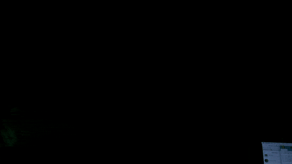
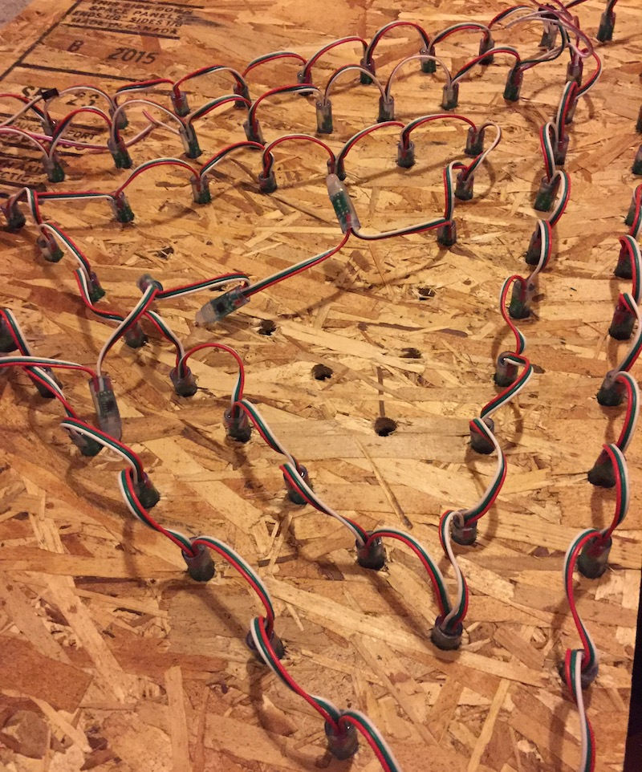
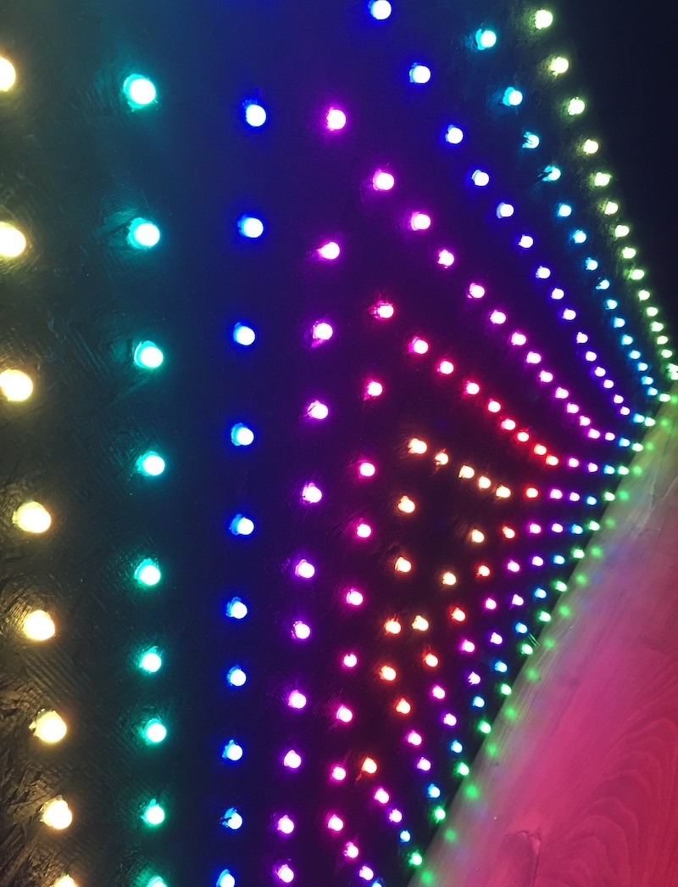

Two triangular LED modules with pattern sequencing system. Made with Arduino, WS2811 LEDs, plywood.
This was my first project with individually addressable LEDs, also known as pixels or NeoPixels. A friend had sent me a video of the Johnson Family Dubstep Christmas Light Show, and I was pretty impressed. Digging deeper, I learned that Matt Johnson is a talented professional with some excellent videos detailing some of his process. Feeling inspired, I bought an Arduino Uno, a soldering iron, and some LEDs.
I liked how the pixels could be used to form any shape, and I immediately wanted to make a triangular panel. It's a highly versatile shape, and I thought it would be fun to program different patterns for it, so I assembled a prototype on a piece of plywood.
Liking how it turned out, I set out to build two larger modules. I measured, marked out, and drilled 252 holes for each. Later versions would be cut from steel on a waterjet and powder-coated. I then glued on side walls and attached hinged back covers.
I used the "bullet" style LED strings – their individual casings and flexible connections make them ideal for fitting snugly into a panel like this.
After inserting them I mounted a power supply and microcontroller inside each box and wired everything up, resulting in two nicely contained modules.
With the build complete, the focus then shifts to the software. This is the exciting part, where you really get find out what kind of ideas you can come up with and express mathematically. The software is based on the concept of patterns, where a pattern is a function that takes in a "progress" amount (from 0-100%) and sets the color of each pixel. Each pattern defines how to make use of parameters that can alter it, for example the color or number of colors. Four patterns are shown in the video, but there are countless more possibilities.
Microcontrollers make it easy to add knobs and buttons, which is where it starts to get really fun. If you're wondering how many segments to use in a pattern, or how big the segments should be, or what colors they should use – you can hook those parameters up to knobs and simply try them out in different combinations.
It started to feel like simultaneously creating an instrument and learning how to play it. Once I started getting the hang of it and finding some good looking configurations, the next logical step was to create a sequencing system that gradually changes the parameters while looping the patterns, essentially playing back written compositions.